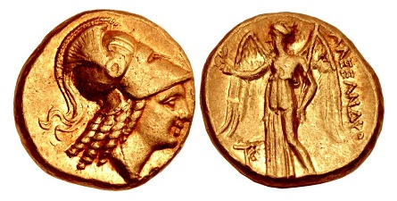

The historically strategic island of Cyprus is located in the Mediterranean Sea, South of Turkey, Southeast of Greece, and North of Egypt. This strategic location has played a significant role in Mediterranean history for over 30 Centuries! The island of Cyprus, though previously inhabited from Neolithic times, was formally settled by Mycenaean (Bronze Age) Greek traders during the 2nd Millennium B.C. The Greek word, Κύπρος or Kýpros, is believed to be derived from the ancient Sumerian word for "copper", as the island was a major source of copper / bronze during antiquity. Cyprus plays a principle role in Greek Mythology, as it is considered the birthplace of both Aphrodite and Adonis. Persian Standard Gold Stater of Salamis From the Reign of Evagoras II (361-351 B.C.) Obverse: Lion with Eagle on its Back, Reverse: Artemis Drawing Bow  Between 708 B.C. and 333 B.C., the island was under the successive control of the Assyrian Empire, the Egyptian Empire, and then the Persian Empire. Gold Stater of Kition c. 325-320 B.C. From the Reign of Pumiathon (362-312 B.C.) Style and Type of Alexander the Great Obverse: Helmeted Head of Athena, Reverse: Nike Standing to the Left. Alexander the Great, during his conquest of the Persian Empire, seized the island in 333 B.C. Following his death, the island part of the Hellenistic Empire of Ptolemaic Egypt, and it remained under Hellenistic rule, until it was taken over by the Roman Republic in 58 B.C. During most of the 1st Millennium A.D., the island was under the successive control of the Roman Republic, Roman Empire, Byzantine Empire, Lusignan French Aristocracy, the Republic of Venice, and then the Ottoman Empire. The First Postage Stamps of Cyprus (1880) In 1878, following the end of Russo-Turkish War and the conclusion of the Congress of Berlin, the island was made a Protectorate of the British Empire, in exchange of guarantees that Great Britain would use the island as a base to protect the Ottoman Empire from further aggression by Russia. During the early 20th Century, the island would serve as a major military base, protecting Great Britain's colonial trade routes. 1928 Silver 45 Piaster Commemorative Coin Fiftieth Anniversary of the Colony With the outbreak of World War I in 1914, Great Britain formally annexed the island of Cyprus, and in 1925, the island officially became a Crown Colony. The island would continue to serve as an important British military base, throughout the first half of the 20th Century. On August 16, 1960, Cyprus became an independent republic. As far as the scope of this website, classical and early modern postage stamps, all of the postage stamps of Cypress, from 1880 to 1960, were issued during the British administration of Cypress. Links to content pages for those issues will appear at the top of column three of this category page.
Issues of 1880-1896 The first Cyprus stamps appeared in 1880. These first definitive postage stamps for the new British Protectorate were produced by overprinting the contemporary postage stamps of Great Britain. In 1878, following the end of Russo-Turkish War and the conclusion of the Congress of Berlin, the island was made a Protectorate of the British Empire, in exchange of guarantees that Great Britain would use the island as a base to protect the Ottoman Empire from further aggression by Russia. The island would eventually serve as a major military base, protecting Great Britain's colonial trade routes to Africa and Asia. With only one exception, the stamps of 1880 were denominated in British Currency. From 1881, all of the stamps, with a couple exceptions, were denominated in Turkish Piasters. All of the stamps of Cyprus, issued between 1880 and 1896, bear the left-facing portrait of Queen Victoria. The six overprinted definitive Cyprus stamps shown above were issued in 1880. The paper watermarks on these CYPRUS-overprinted Great Britain stamps are as follows. 1/2 P. -- Wmk. Script "half penny". 1 P. -- Wmk. Large Crown. 2 1/2 P. -- Wmk. Orb. 4 P. -- Wmk. Large Garter. 6 P. -- Wmk. Spray of Rose. 1 S. -- Wmk. Spray of Rose. The plate numbers used to print these CYPRUS-overprinted Great Britain stamps are as follows. 1/2 P. -- Plates 12, 15, 19. 1 P. -- Plates 174, 181, 184, 193, 196, 201, 205, 208, 215, 216, 218, 220. 2 1/2 P. -- Plates 14, 15. 4 P. -- Plate 16. 6 P. -- Plate 16. 1 S. -- Plate 13. The Scott catalog attributes are as follows. 1/2 P. (1880 - Sc. #1) - Rose. 1 P. (1880 - Sc. #2) - Red. 2 1/2 P. (1880 - Sc. #3) - Claret. 4 P. (1880 - Sc. #4) - Light Olive Green. 6 P. (1880 - Sc. #5) - Olive Gray. 1 S. (1880 - Sc. #6) - Green. The four re-valued definitive Cyprus stamps shown above were issued in 1880 and 1881. The Scott catalog attributes are as follows. 30 Pa. on 1 P. (1880 - Sc. #7) - Red. 1/2 P. on 1 P. (1881 - Surch. 18 mm - Sc. #8) - Red. 1/2 P. on 1 P. (1881 - Surch. 16 mm - Sc. #9) - Red. 1/2 P. on 1 P. (1881 - Surch. 13 mm - Sc. #10) - Red. The five new portrait definitive Cyprus stamps shown above were issued in July 1881. These were the first stamps to be produced with the name of the colony and the denomination, in Turkish Piasters, printed on them. These stamps are typographed on paper with a Crown & CC watermark and they are perforated 14. The Scott catalog attributes are as follows. 1/2 Pi. (1881 - Sc. #11) - Emerald Green. 1 Pi. (1881 - Sc. #12) - Rose. 2 Pi. (1881 - Sc. #13) - Ultramarine. 4 Pi. (1881 - Sc. #14) - Olive Green. 6 Pi. (1881 - Sc. #15) - Olive Gray. The two re-valued definitive Cyprus stamp types of 1881 shown above were issued in 1882 and 1884. The Scott catalog attributes, for stamps that are watermarked Crown and CC, are as follows. 1/2 Pi. on 1/2 Pi. (1882 - Sc. #16) - Emerald Green. 30 Pi. on Pi. (1882 - Sc. #17) - Rose. The Scott catalog attributes, for stamps that are watermarked Crown and CA, are as follows. 1/2 Pi. on 1/2 Pi. (1884 - Sc. #18) - Emerald Green. The seven portrait definitive Cyprus stamps shown above were issued between 1882 and 1883. All of these stamps were typographed on paper with the Crown and CA watermark. The plates for these stamps were produced from two different dies as follows. Die A -- The lines in the background vary in thickness and are not uniformly straight. There is a small dash in the upper part of the second jewel in the band of the crown. Die B -- The lines in the background are all thin and uniformly straight. There is NO dash in the upper part of the second jewel in the band of the crown. The Scott catalog attributes, for Die A stamps, are as follows. 1/2 Pi. (1882 - Sc. #19a) - Green, Emerald. 30 Pa. (1882 - Sc. #20a) - Lilac. 1 Pi. (1883 - Sc. #21a) - Rose. 2 Pi. (1883 - Sc. #22a) - Blue. 4 Pi. (1883 - Sc. #23a) - Pale Olive Green. 4 Pi. (1883 - Sc. #23c) - Deep Olive Green. 6 Pi. (1883 - Sc. #24) - Olive Gray. 12 Pi. (1886 - Sc. #25) - Brown Orange. The Scott catalog attributes, for Die B stamps, are as follows. 1/2 Pi. (1882 - Sc. #19) - Green. 30 Pa. (1882 - Sc. #20) - Violet. 1 Pi. (1883 - Sc. #21) - Rose. 2 Pi. (1883 - Sc. #22) - Blue. 4 Pi. (1883 - Sc. #23) - Pale Olive Green. 4 Pi. (1883 - Sc. #23b) - Olive Green. 6 Pi. (1883 - Sc. #24a) - Olive Gray. 12 Pi. (1886 - Sc. #25a) - Brown Orange. The two re-valued definitive Cyprus stamps shown above were issued in 1886. There are two types, with the difference being in the vertical measurement of the fraction numerals. Both types are shown above. Type 1 -- The figures in "1/2" are 8 mm apart. Type 2 -- The figures in "1/2" are 6 mm apart. The Scott catalog attributes, for stamps that are watermarked Crown and CA, are as follows. 1/2 Pi. on 1/2 Pi. (1886 - Type 1 - Sc. #26) - Green. 1/2 Pi. on 1/2 Pi. (1886 - Type 2 - Sc. #26a) - Green. The Scott catalog attributes, for stamps that are watermarked Crown and CC, are as follows. 1/2 Pi. on 1/2 Pi. (1886 - Type 1 - Sc. #27) - Green. 1/2 Pi. on 1/2 Pi. (1886 - Type 2 - Sc. #27a) - Green. The ten impressive-looking bi-colored portrait definitive Cyprus stamps shown above were issued between 1894 and 1896. All of these stamps were typographed on paper with the Crown and CA watermark. The Scott catalog attributes are as follows. 1/2 Pi. (1896 - Sc. #28) - Green & Carmine Rose. 30 Pa. (1896 - Sc. #29) - Violet & Green. 1 Pi. (1896 - Sc. #30) - Rose & Ultramarine. 2 Pi. (1896 - Sc. #31) - Ultramarine & Maroon. 4 Pi. (1894 - Sc. #32) - Olive Green & Violet. 6 Pi. (1896 - Sc. #33) - Olive Gray & Green. 9 Pi. (1896 - Sc. #34) - Brown & Rose. 12 Pi. (1896 - Sc. #35) - Brown Orange & Black. 18 Pi. (1894 - Sc. #36) - Slate & Brown. 45 Pi. (1894 - Sc. #37) - Dark Violet & Ultramarine.
For commemorative Cyprus stamps, the big event of 1953 was the coronation of Queen Elizabeth II. A brand new series of pictorial definitive stamps were implemented in 1955, coinciding with the establishment of a new currency for Cyprus. Far reaching social and political changes were in progress in Cyprus during this period, and ultimately, only sixteen stamps would be issued for the reign of this new monarch. The commemorative stamp shown above (Sc. #167) was issued on June 3, 1953 to celebrate the Coronation of Queen Elizabeth II. The design features one of the many photographs of the young queen taken by Dorothy Wilding (1893-1976), during February 1952, just a few days after the accession of the new monarch. The fifteen pictorial and portrait definitive Cyprus stamps shown above (Sc. #168-182) were issued on August 1, 1955. These stamps are all engraved, and they are printed on paper with the Multiple Crown and Script CA watermark. The designs feature the Dorothy Wilding portrait of Queen Elizabeth II and the following pictorial subjects. 002 M. -- Carobs. 003 M. -- Grapes. 005 M. -- Oranges. 010 M. -- Copper Pyrites Mine. 015 M. -- Troodos Forest. 020 M. -- Aphrodiite Beach. 025 M. -- Silver Coin of Paphos c. 400-370 BC. 030 M. -- Kyrenia. 035 M. -- Harvest in Mesaooria. 040 M. -- Famagusta Harbor. 050 M. -- St. Hilarion Castle. 100 M. -- Hala Sultan Tekke. 250 M. -- Kanakaria Church. 500 M. -- Ancient Cypriot Coinage Symbols for Salamis, Paphos, Citium (Kition), and Idalium. £ 1 -- Symbols of the Byzantine Empire, Lusignan Kingdom, Ottoman Empire, and the Republic of Venice. On August 16, 1960, Cyprus became an independent republic, and eighty-two years of British colonial rule came to an end. The pictorial definitive stamps issued in 1955 were overprinted "REPUBLIC OF CYPRUS" in both Greek and Turkish for provisional use by the new Cypriot government. These provisional definitive postage stamps (Sc. #183-197) continued in use, until the first definitive stamps of the Republic of Cyprus were issued in 1962. An example is shown directly above. The overprints are spaced and placed differently on each of the stamps in the set, depending on the particular stamp's dimensions.
As the owner of this website, I recognize that your privacy is important. This privacy policy document outlines the types of personal information I receive and collect when you use stamp-collecting-world.com. I hope this will help you make an informed decision about sharing personal information with us. stamp-collecting-world.com strives to maintain the highest standards of decency, fairness, and integrity in all its operations. Likewise, I am dedicated to protecting customer, consumer, and online visitor privacy on this website.